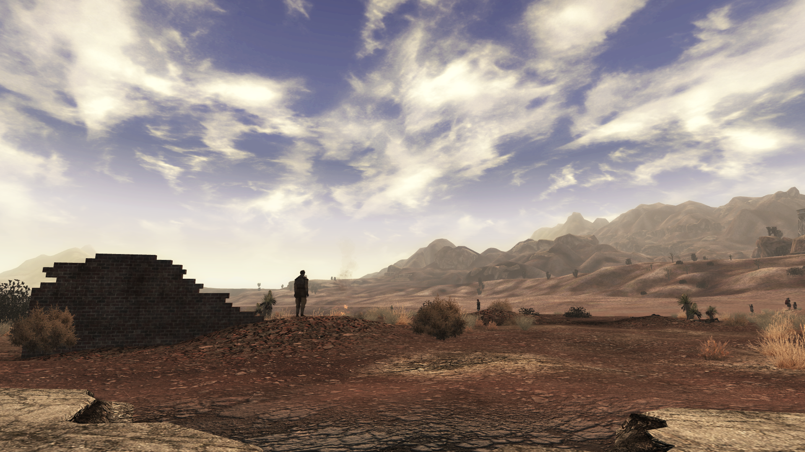
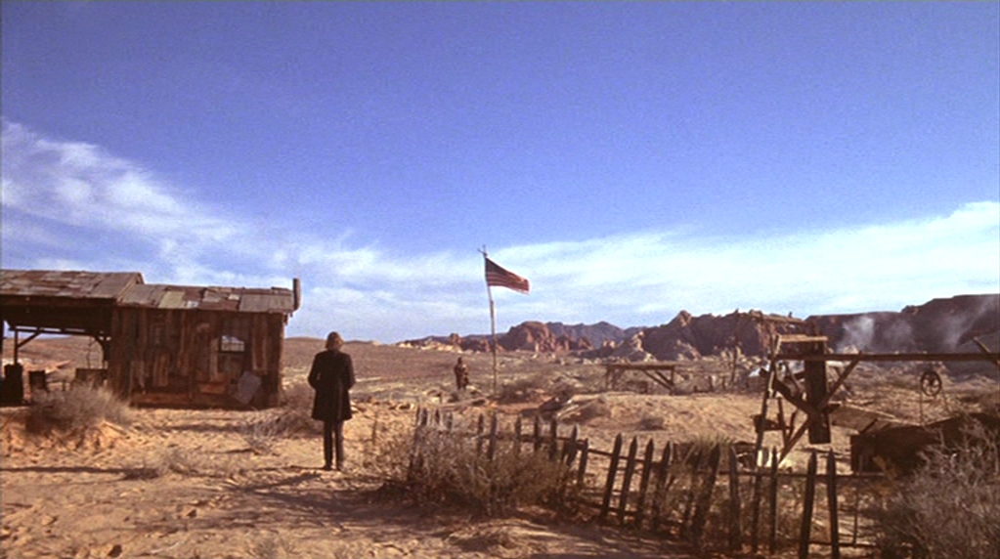

Despite rayguns, robots, and radiation, Fallout New Vegas is at its core, a reconstruction of the revisionist Western: transplanting the themes and frontier mythos built up by other examples of the genre and placing it in a new setting. Through their choices in environmental design, narrative, and game mechanics Obsidian Entertainment evoke the grammar of the Western. Exploring New Vegas through the lens of genre theory reveals the nature of genre as a set of conventions and ideas that can be reconstructed in radically different contexts, rather than a fixed aesthetic.
Genre
A Western is not a movie with cowboys, tumbleweeds and duels at high noon: it is a category created from the relationship between different texts and the audience's accumulated experience with said texts. In Steve Neale's (2012) Genre and Hollywood he posits genre as a ubiquitous "multi-dimensional phenomenon" (p. 2) born from a mix of audience expectations, categories, labels, and convention, rather than just a fixed set of visual properties. Effectively, and in spite of the name, an audience recognizes a Western from its conventions not its setting: a lone drifter, a lawless land, and the tension between order and freedom.
Neale was writing with film in mind, and historically videogame genres have been delineated less by what happens and more by what you do: if you solve puzzles it's a puzzle game, if you shoot it's a shooter, etc. Apperley's (2006) Genre and Game Studies explores this, highlighting the importance of interactivity in defining a game's genre rather than visual and narrative devices. However, while Apperley's framework is useful for describing how games are categorized, it fails to account for how games may carry the conventions of non-interactive media, like the western. For this, Bogost's (2010) concept of procedural rhetoric developed in Persuasive Games is essential. Bogost argues that games make arguments and express meaning mechanically, independent of visuals and narrative. Game mechanics are not neutral, they help to model a certain version of the world and invite the player to inhabit it. Applied to New Vegas, this means it is not enough to just examine the art direction alone, we must also consider the mechanics, what they ask of the player, and how they develop the world the player inhabits.
With our framework for genre established, we must define the conventions and expectations that create the Western. Drawing on Richard Slotkin's (2024) account of the frontier myth and Will Wright's (1977) structuralist analysis of Western narrative, we will anchor our analysis on three conventions: the lone drifter arriving in a lawless territory, the tension between encroaching governance and existing communities, and the resolution of social conflict through individual action and reputation.
Aesthetics & Environments: The Frontier, Revisited
The Same Desert
Fallout New Vegas takes place in the Mojave Wasteland, a post-apocalyptic desert where settlements are largely small and distant from one another. Historically, the Mojave has been used as the filming location for Westerns since at least as early as 1928 with In Old Arizona: the desert is a definitive "Western" location, the environment is open, rocky, and arid: serving as an effective representation for the themes of isolation, danger, and freedom associated with the genre. This in conjunction with the game's use of an orange tint, dust effects, and heat haze serve as visual cues for the genre, operating below conscious recognition and playing off of audience expectations to put them in the world of a Western.

Fallout: New Vegas (Obsidian Entertainment, 2010). The Mojave's diurnal palette operates as genre signal, evoking the cinematographic language of the revisionist Western before a single narrative convention is introduced.
The Same Towns
The settlements in New Vegas continue to support the genre, mapping almost perfectly onto existing archetypes for Western towns. Consider Goodsprings: a small independent settlement featuring a general store, a saloon with a prospector sitting on a chair outside, and a graveyard on a hill. They face an exterior threat as a morally ambiguous stranger chooses whether or not, and how, to intervene. Alternatively, consider the town of Primm, which features little more than a sheriff's office, and a casino. The sheriff has been killed, the deputy has been captured, and the town has fallen into the hands of a gang of escaped convicts. Once again, the player as our lone drifter is left to determine their fate. These settlements follow Western tropes both in their structures, and their narrative: a sparse town with equal parts vice and propriety, on the brink of collapse save for the intervention of a mysterious stranger.
Narrative
The Same Stranger
The game begins with the player character — the Courier, lying in an open grave, staring down the barrel of a gun. A figure with no backstory, no community ties, and no home, left for dead in an unforgiving desert: the Courier is the perfect distillation of the Western protagonist. Will Wright's structural analysis of the Western hero argues that the protagonist must exist outside society in order to move freely between its factions and resolve its conflicts and the Courier fulfills this role almost theoretically. The game withholds everything that might anchor them to a particular community or ideology, leaving only a figure defined by their movements throughout the Mojave rather than their belonging to any part of it. Initially out for revenge against the man who shot them, they find themselves involved in a much larger struggle for land, power, and order: mirroring the arc of many Western protagonists whose personal vendettas have long been the genre's preferred vehicle for introducing broader political anxieties.
The New California Republic
The New California Republic (NCR) represents the civilization Frederick Turner's Frontier Thesis claimed would inevitably follow the pioneer's journey out west. However, New Vegas, like the revisionist Western is deeply sceptical of what that civilization delivers. The troops sent to maintain control of the region are under-supplied and demoralized, the command in Camp McCarran is self-interested and corrupt, and the politicians are in the pocket of wealthy agricultural land owners known as Brahmin Barons. Initially born of good intentions, its expansion causes it to reproduce the corruption and violence it was founded to replace, a trajectory Richard Slotkin identifies as central to the frontier myth, which carries within it the seeds of its own betrayal.
Prior to the game's story the NCR was responsible for the Bitter Springs Massacre: a conflict between the NCR and a tribal group known as the Great Khans. During their expansion into the Mojave, 4 NCR soldiers were killed by the Khans. A retaliatory strike was ordered, but incomplete reconnaissance led the NCR to believe the camp they were targeting was militant in nature. After the firefight broke out, further miscommunications between the strike force and command led to the deaths of non-combatants who were attempting to escape including the wounded, children and elderly. The structure of the event is almost identical to historical US cavalry massacres such as Sand Creek and Wounded Knee: institutional overreach, intelligence failure, and the violent consequences falling on the vulnerable. This is precisely the history that the revisionist Western of the 1970s began to surface after decades of classical Westerns that had simply written Native presence out of the frontier entirely. New Vegas stages the same reckoning, transposed to a post-apocalyptic key. In one of the game's possible endings, the NCR resettles the surviving Khans onto an isolated reservation despite prior promises of amnesty. Together despite their opposition, the NCR and Caesar's Legion form a complete portrait of what the frontier's "civilization" has always actually meant for those already living in its path.
Caesar's Legion
Opposing the NCR is Caesar's Legion: a ruthless, misogynistic conquering force that imposes order through fear and violence. Their leader Caesar — formerly a member of the Followers of the Apocalypse, a humanitarian organization dedicated to preserving knowledge — used his scholarly understanding of imperial Rome to construct a new mythology, convincing the tribes of the Grand Canyon that he was the son of Mars, the God of War. What makes Caesar unusual as a Western villain is his self-awareness: he is not simply brutal, he is ideologically coherent. He views the NCR as a repetition of the institutional failures that led to the apocalypse, and frames the conflict between the two factions as an expression of Hegelian dialectics, with his Legion as the necessary historical antithesis. He knows he is building a myth, an unsettling and rare lucidity for a villain of his nature.
The Legion's treatment of the tribes it absorbs makes explicit what the NCR's treatment of the Great Khans implies: that the westward march of civilization, whether democratic or not, destroys the cultures it encounters. Caesar systematically eliminates the languages, customs, and identities of conquered tribes, folding them into his version of society. This is structurally identical to the cultural erasure enacted by the historical American frontier and it is precisely what the revisionist Westerns of the 1970s began to reckon with after decades of classical Westerns that had rendered Native presence invisible or reduced it to savagery. New Vegas demonstrates both versions of this violence simultaneously: the NCR's accidental and bureaucratic trampling and the Legion's deliberate, ideological erasure. Together despite their opposition, they form a complete portrait of what the frontier's "civilization" has always actually meant for those already living in its path.
Playing Like a Western
Where its predecessor used a binary karma meter (good deeds accumulate positive karma, bad deeds negative) Fallout: New Vegas replaces this with a faction reputation system. The karma system still exists in New Vegas, but it is largely vestigial, carrying no meaningful gameplay consequences. The reputation system, by contrast, means that the player's actions produce specific political and social consequences with groups rather than registering on a universal moral scale. This is precisely what Ian Bogost would identify as procedural rhetoric: the game's rules do not merely illustrate a moral worldview, they enact one. By encoding consequence as relational rather than absolute, New Vegas' mechanics argue that morality on the frontier is a matter of standing and allegiance rather than virtue: which is exactly how morality functions in the revisionist Western, where the absence of unified law enforcement means your reputation with specific communities matters far more than any broader ethical standing.
This has a significant structural effect on the player's experience of the narrative. Because reputation operates independently of karma, a player can build positive standing with morally opposed factions simultaneously, or be feared and respected in equal measure by different groups. The result is a protagonist whose moral identity is defined by their relationships rather than their nature, mirroring the variety of Western protagonists from the classical hero to the anti-hero to the outright villain, all of whom navigate frontier society through reputation and consequence rather than fixed ethical alignment. The mechanics do not allow the player to be simply good or simply evil; they allow them to be complicated, the central moral proposition of the revisionist Western.
Conclusion
Fallout New Vegas artfully transposes the language of the revisionist Western into a post-post-apocalyptic world caught in conflicts the revisionist Western has always been a vehicle for processing. The Mojave looks like the frontier, largely because it is the frontier: a disparate and complex land filled with people trying to build something new and the consequences that will necessarily follow. The narrative feels like a Western, largely because it is a Western, a person left for dead tracking down the man who tried to kill them across the desert, making major changes in the lives of anyone who crosses their path. Finally, it plays like a Western: mechanically building a world that acts and responds to the player like a Western would.
What New Vegas demonstrates is that genre is not a costume, but a grammar: a set of conventions, structures, rules, and moral propositions that can be lifted out of one context and fluently restated in another without losing their essential meaning. Just as Joyce maintained the architecture of The Odyssey under Dublin's cloudy skies, or a jazz musician keeps the heart of a song alive through a completely different instrumentation and key, Obsidian Entertainment kept the revisionist Western alive and undiminished amongst the ruins of the old world. The Mojave is still the frontier, The Courier is still the drifter, and the question the genre has always asked: what does civilization cost the people already living in its path, has, in the Mojave as it always did, the same uncomfortable answer.

Left: The Ballad of Cable Hogue (Peckinpah, 1970). Right: Fallout: New Vegas (Obsidian Entertainment, 2010).
References
- Apperley, T. H. (2006). Genre and game studies: Toward a critical approach to video game genres. Simulation & Gaming, 37(1), 6–23. https://doi.org/10.1177/1046878105282278
- Bogost, I. (2010). Persuasive games: The expressive power of videogames. MIT Press.
- Frederick Jackson Turner. (2015). The frontier in American history. Open Road Media.
- Neale, S. (2012). Genre and Hollywood. Taylor and Francis.
- Slotkin, R. (2024). The fatal environment: The myth of the frontier in the age of industrialization, 1800–1890. Open Road Media.
- Wright, W. (1977). Sixguns and Society: A Structural Study of the Western. University of California Press.